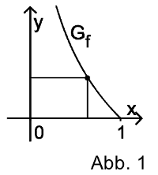

Bayerisches Abitur in Mathematik 2014¶
Aufgabe
In einem Koordinatensystem (vgl. Abbildung 1) werden alle Rechtecke betrachtet, die folgende Bedingungen erfüllen:
Zwei Seiten liegen auf den Koordinatenachsen.
Ein Eckpunkt liegt auf dem Graphen \(G_f\) der Funktion \(f : x\mapsto -\ln x\) mit \(0<x<1\).
Abbildung 1 zeigt ein solches Rechteck.
Unter den betrachteten Rechtecken gibt es eines mit größtem Flächeninhalt. Berechnen Sie die Seitenlängen dieses Rechtecks.
Lösung
Der Flächeninhalt der betrachteten Rechtecke ergibt sich aus der Multiplikation von Höhe und Breite. Die Breite ist hierbei immer durch den \(x\)-Wert des Eckpunktes, der auf dem Funktionsgraphen liegt, gegeben. Die Höhe ist durch den \(y\)-Wert des Eckpunktes, also \(f(x)\), bestimmt. Der Flächeninhalt eines Rechtecks zu einem gegbenen \(x\)-Wert beträgt somit
Um den maximalen Flächeninhalt zu bestimmen, suchen wir also ein Extremum von \(A(x)\), das durch
gegeben ist. Wegen \(A''(x)=-1/x <0\) ist das Extremum immer ein Maximum. Es liegt bei \(x_0=1/\mathrm{e}\) mit \(f(x_0)=1\). Das zugehörige Rechteck hat demnach die Breite \(1/\mathrm{e}\) und Höhe \(1\) und schließt eine Fläche von \(1/\mathrm{e}\) ein.
Auch mit Hilfe von Sage können wir den maximalen Flächeninhalt durch Gleichsetzen der Ableitung mit Null bestimmen.
Die folgenden beiden Abbildungen zeigen links das Rechteck unter dem Graphen \(G_f\) und rechts als grünen Punkt die zugehörige Fläche für einen variablen Wert der Breite \(x_0\).